1.4. Matplotlib: 绘图¶
作者: Nicolas Rougier, Mike Müller, Gaël Varoquaux
Chapter contents
1.4.1. 简介¶
小技巧
Matplotlib 是最常用的独立2维绘图库. 它能够快速将数据可视化，并输出到多种格式的，高质量的图片。 下面我们将会介绍一些常用的例子，它们将会涵盖大多数使用场景。
1.4.1.1. IPython 和 matplotlib 模式¶
小技巧
IPython 是一种强化的Python shell。
| IPython 控制台: | 开启 IPython 控制台，加入命令行参数 --matplotlib (更老版本中是 -pylab ). |
|---|---|
| IPython notebook: | |
| 在 IPython notebook 中插入 `magic<http://ipython.readthedocs.org/en/stable/interactive/magics.html>`_:: %matplotlib inline | |
1.4.1.2. pyplot¶
小技巧
matplotlib的pyplot子库提供了和matlab类似的绘图API，方便用户快速绘制2D图表。
from matplotlib import pyplot as plt
1.4.2. 绘图基础¶
小技巧
这一节，我们将会在同一画布上绘制正余弦函数的图像。并且在之后逐步添加细节。
第一步，获取正余弦函数数据:
import numpy as np
X = np.linspace(-np.pi, np.pi, 256, endpoint=True)
C, S = np.cos(X), np.sin(X)
X 是一个 numpy 数组，包含从 -π 到 +π 的256个数据点 (包含端点).
C 和 S 分别是相应的正余弦函数值。
运行这个例子，你可以在命令行中输入:
$ ipython --pylab
结果如下:
IPython 0.13 -- An enhanced Interactive Python.
? -> Introduction to IPython's features.
%magic -> Information about IPython's 'magic' % functions.
help -> Python's own help system.
object? -> Details about 'object'. ?object also works, ?? prints more.
Welcome to pylab, a matplotlib-based Python environment.
For more information, type 'help(pylab)'.
小技巧
你也可以在命令行下直接运行:
$ python exercice_1.py
点击相应的图片，可以获取相应代码。
1.4.2.1. 使用默认设置绘图。¶
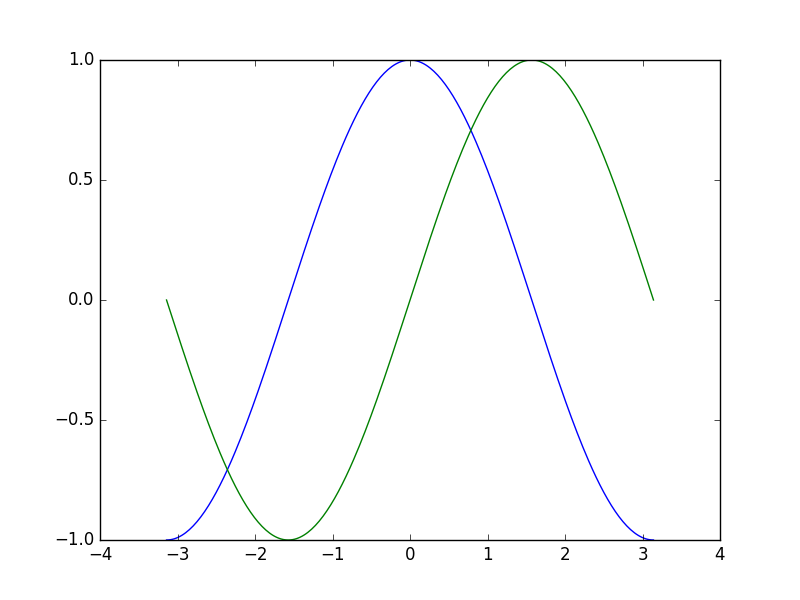小技巧
Matplotlib 图像高度可定制， 你可以更改 matplotlib 中几乎所有的设置: 图像大小和分辨率，线的宽度，颜色和样式, 坐标轴, 插入文字和字体等等。
import numpy as np
import matplotlib.pyplot as plt
X = np.linspace(-np.pi, np.pi, 256, endpoint=True)
C, S = np.cos(X), np.sin(X)
plt.plot(X, C)
plt.plot(X, S)
plt.show()
1.4.2.2. 实例化默认设置图像¶
如下的代码可以绘制基于默认设置的图像。
小技巧
这些设置被显示地设置为默认值。你可以交互式地探索这些特性 (参考 Line properties 和 Line styles ).
import numpy as np
import matplotlib.pyplot as plt
# Create a figure of size 8x6 inches, 80 dots per inch
plt.figure(figsize=(8, 6), dpi=80)
# Create a new subplot from a grid of 1x1
plt.subplot(1, 1, 1)
X = np.linspace(-np.pi, np.pi, 256, endpoint=True)
C, S = np.cos(X), np.sin(X)
# Plot cosine with a blue continuous line of width 1 (pixels)
plt.plot(X, C, color="blue", linewidth=1.0, linestyle="-")
# Plot sine with a green continuous line of width 1 (pixels)
plt.plot(X, S, color="green", linewidth=1.0, linestyle="-")
# Set x limits
plt.xlim(-4.0, 4.0)
# Set x ticks
plt.xticks(np.linspace(-4, 4, 9, endpoint=True))
# Set y limits
plt.ylim(-1.0, 1.0)
# Set y ticks
plt.yticks(np.linspace(-1, 1, 5, endpoint=True))
# Save figure using 72 dots per inch
# plt.savefig("exercice_2.png", dpi=72)
# Show result on screen
plt.show()
1.4.2.3. 改变线宽和颜色¶
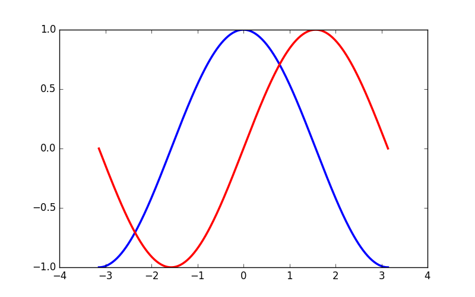小技巧
第一步，把余弦曲线改为蓝色，正弦曲线改为红色，并加粗。
...
plt.figure(figsize=(10, 6), dpi=80)
plt.plot(X, C, color="blue", linewidth=2.5, linestyle="-")
plt.plot(X, S, color="red", linewidth=2.5, linestyle="-")
...
1.4.2.4. 设置坐标范围¶
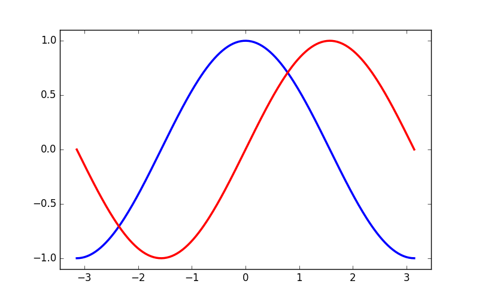小技巧
默认的坐标范围较小。为了清晰地呈现所有数据点，我们将坐标范围设置大一点。
...
plt.xlim(X.min() * 1.1, X.max() * 1.1)
plt.ylim(C.min() * 1.1, C.max() * 1.1)
...
1.4.2.5. 设置坐标轴刻度¶
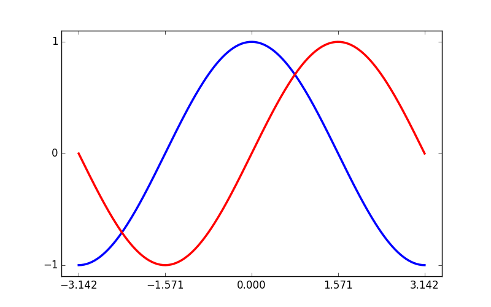小技巧
现有的坐标轴没有（+/-π,+/-π/2) 刻度，通过以下代码设置这些坐标点：
...
plt.xticks([-np.pi, -np.pi/2, 0, np.pi/2, np.pi])
plt.yticks([-1, 0, +1])
...
1.4.2.6. 设置刻度标签¶
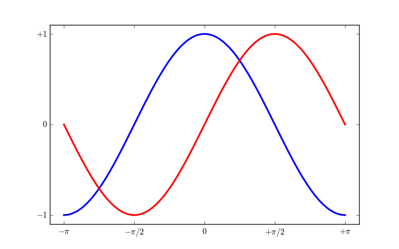小技巧
现在刻度已经成功设置好了，但是我们想把3.142显式设置为 π 。 为了做到这一点，在 ‘xticks()’ 和 ‘yticks()’ 中传入第二个参数列表. ( 这里使用了latex公式，以便更加美观。 )
...
plt.xticks([-np.pi, -np.pi/2, 0, np.pi/2, np.pi],
[r'$-\pi$', r'$-\pi/2$', r'$0$', r'$+\pi/2$', r'$+\pi$'])
plt.yticks([-1, 0, +1],
[r'$-1$', r'$0$', r'$+1$'])
...
1.4.2.7. 移动轴线(spines,不知道怎么翻译TT)¶
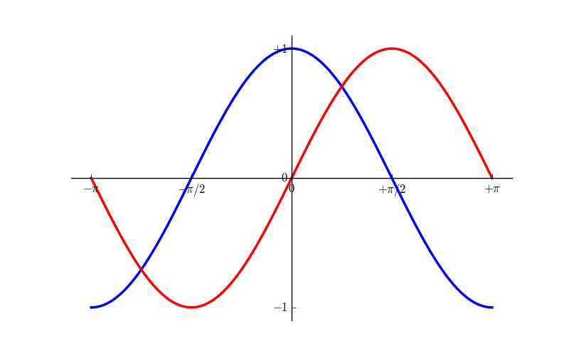小技巧
Spines是连接坐标刻度和标记数据区域的线条. 它们可以被置于图形任意位置. 我们现在把它们移动到图形中央位置。因为总共有4根线条(top/bottom/left/right), 我们 top 和 right 两线条设置为无色，把 bottom 和 left 移动 0 坐标处。
...
ax = plt.gca() # gca stands for 'get current axis'
ax.spines['right'].set_color('none')
ax.spines['top'].set_color('none')
ax.xaxis.set_ticks_position('bottom')
ax.spines['bottom'].set_position(('data',0))
ax.yaxis.set_ticks_position('left')
ax.spines['left'].set_position(('data',0))
...
1.4.2.8. 添加图例¶
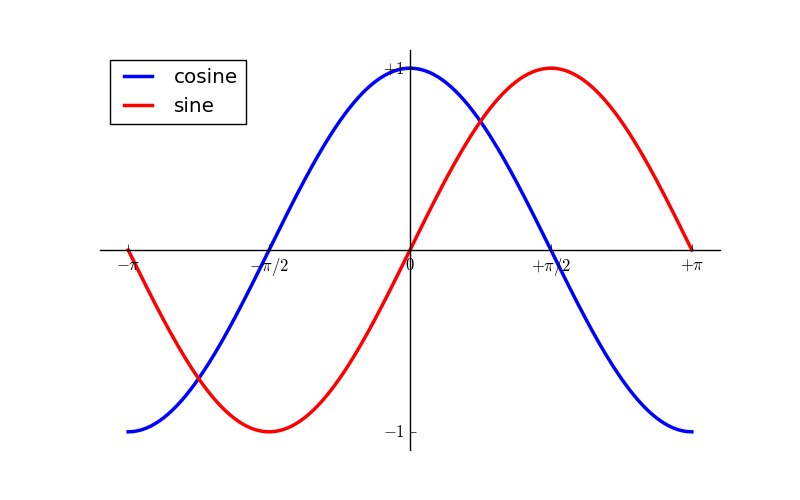小技巧
通过在plot()中添加label参数，并设置legend(),在图形左上角图例。
...
plt.plot(X, C, color="blue", linewidth=2.5, linestyle="-", label="cosine")
plt.plot(X, S, color="red", linewidth=2.5, linestyle="-", label="sine")
plt.legend(loc='upper left')
...
1.4.2.9. 标注数据点¶
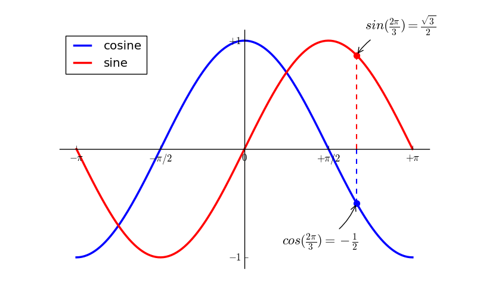小技巧
通过 annotate() 在图形中添加注释。在正余弦曲线的 2π/3 处添加 标注，首先在曲线相应位置打上记号，并记号点与坐标轴之间添加一条竖直虚线。 接下来，使用 annotate() 添加带箭头的文字标注。
...
t = 2 * np.pi / 3
plt.plot([t, t], [0, np.cos(t)], color='blue', linewidth=2.5, linestyle="--")
plt.scatter([t, ], [np.cos(t), ], 50, color='blue')
plt.annotate(r'$sin(\frac{2\pi}{3})=\frac{\sqrt{3}}{2}$',
xy=(t, np.sin(t)), xycoords='data',
xytext=(+10, +30), textcoords='offset points', fontsize=16,
arrowprops=dict(arrowstyle="->", connectionstyle="arc3,rad=.2"))
plt.plot([t, t],[0, np.sin(t)], color='red', linewidth=2.5, linestyle="--")
plt.scatter([t, ],[np.sin(t), ], 50, color='red')
plt.annotate(r'$cos(\frac{2\pi}{3})=-\frac{1}{2}$',
xy=(t, np.cos(t)), xycoords='data',
xytext=(-90, -50), textcoords='offset points', fontsize=16,
arrowprops=dict(arrowstyle="->", connectionstyle="arc3,rad=.2"))
...
1.4.3. 图形窗口，子图，轴线和刻度¶
- matplotlib 中， “图形窗口(figure)” 是整个图形界面。其中可以包含一些
- “子图(subplots)”.
小技巧
以上，我们隐式地创建了图形窗格和坐标轴线，这提高了我们绘制图形的效率。 我们也可以显示地设置两者的性质。在我们调用plot()的同时，matplotlib调用了
gca()获取当前轴线， 接着 gca 调用gcf()获取当前图形窗口。
当我们执行 figure() 命令时，严格来说，我们调用的是 subplot(111)。
让我们来看看更多相关信息。
1.4.3.1. 图形窗口¶
小技巧
图形窗口以 “Figure #” 命名. 并且从序号1开始 (这与Python中通常以 0 为计数起点的对象不同，带有明显的Matlab风格 )。 控制图形窗口的一些参数如下表所示:
小技巧
默认值可在源文件中设置。 As with other objects, you can set figure properties also setp or with the set_something methods.
除了点击图形窗口界面右上角的关闭按钮之外，你也可以使用 plt.close() 来关闭
窗口：(1) 关闭当前窗口(不带参数)，
(2) 关闭指定窗口 (以窗口序号或者图形实例作为参数)， (3) 关闭所有窗口
(以 "all" 作为参数)。
plt.close(1) # 关闭 figure 1
1.4.3.2. subplot¶
小技巧
通过 subplot ，你可以在坐标方格中设置图形的位置以及布局。 gridspec 是 另外一种更为强大的设置方法.
1.4.3.3. Axes¶
Axes 和 subplot 十分相似，但是 axes 可以被置于 figure 任意位置。 因此，如果我们想要在一个大的图表中插入一张小图表，可以使用 axes 实现。
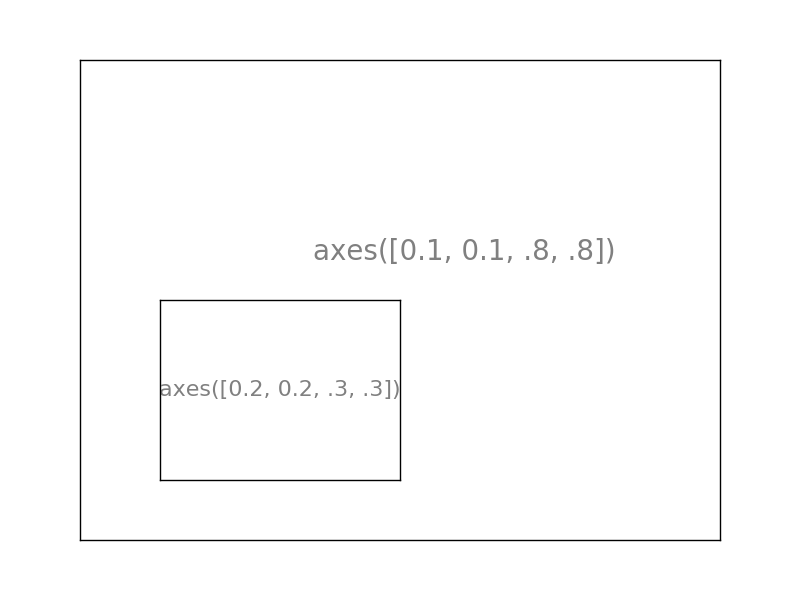 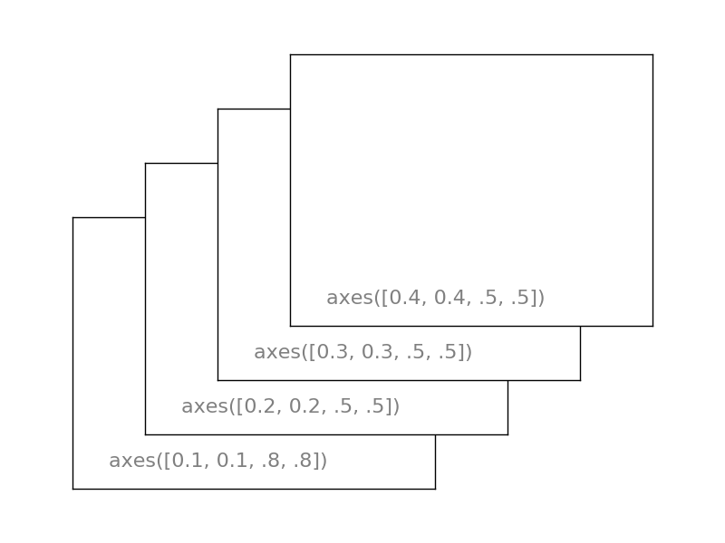1.4.3.4. Ticks¶
良好的 tick 设置对于高质量的图表来说是必不可少的。在 Matplotlib 中可以方便设置tick的 各种属性。 tick locators 标明 tick 的位置，tick formatters 标明 tick 的外观，并且主次刻度可以相互独立地设置各自的属性。
1.4.3.4.1. Tick Locators¶
Tick locators 用于控制tick的位置，按如下方法设置:
ax = plt.gca()
ax.xaxis.set_major_locator(eval(locator))
常用的一些locator如下:
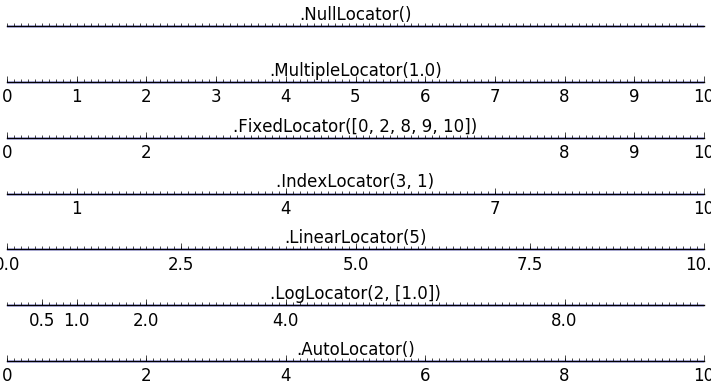所有的locator都继承自 matplotlib.ticker.Locator 这个基类，你可以通过继承它来实现自己的locator。
使用日期作为locator是一件麻烦事，matplotlib 为此提供了一些特殊的locator, matplotlib.dates.
1.4.4. 其他种类的图形: 一些例子和练习¶


1.4.4.1. 常见图像¶
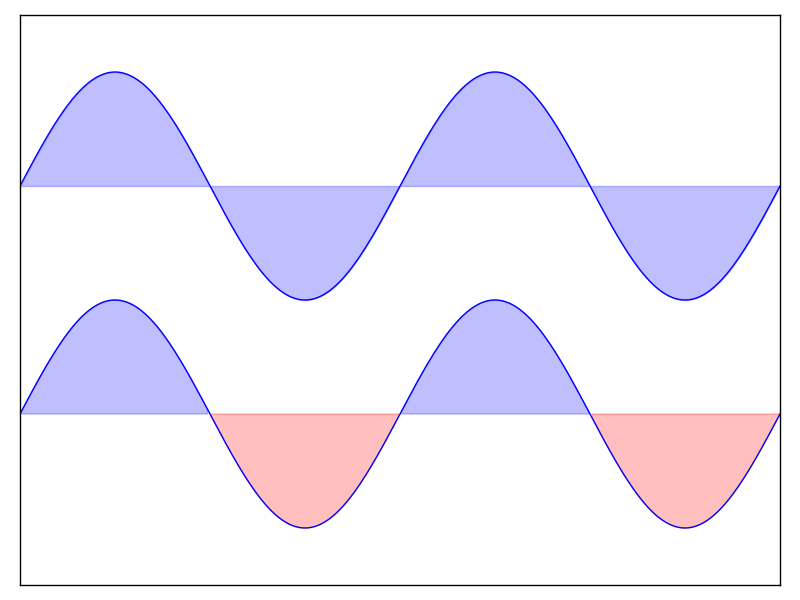提示
需使用 fill_between 命令.
参考如下代码，尝试画出右侧的图像，你需要注意图片的填充域:
n = 256
X = np.linspace(-np.pi, np.pi, n, endpoint=True)
Y = np.sin(2 * X)
plt.plot(X, Y + 1, color='blue', alpha=1.00)
plt.plot(X, Y - 1, color='blue', alpha=1.00)
点击图片获取源码
1.4.4.2. 散点图¶
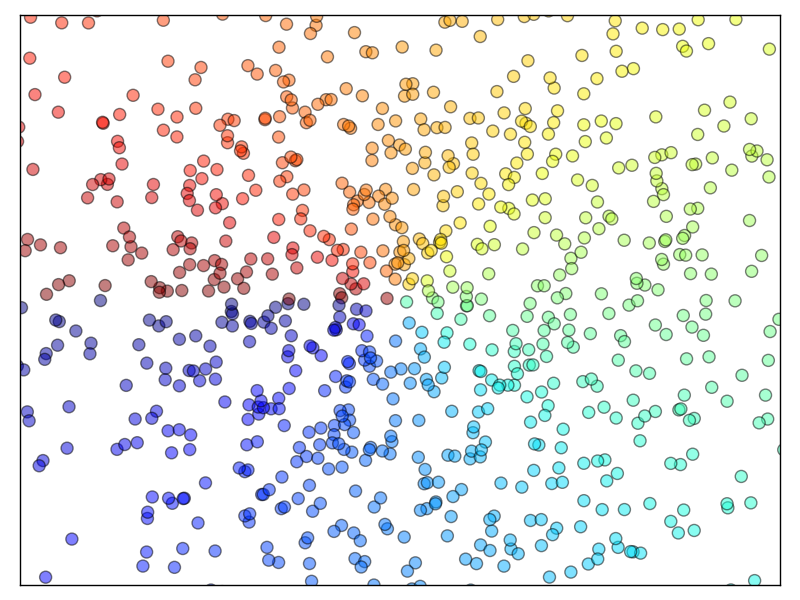提示
颜色由(X,Y)角度决定。
参考如下代码，尝试画出右侧的图像，你需要主义 marker 大小，色彩和透明度。
n = 1024
X = np.random.normal(0,1,n)
Y = np.random.normal(0,1,n)
plt.scatter(X,Y)
点击图片获取源码
1.4.4.3. 条形图¶
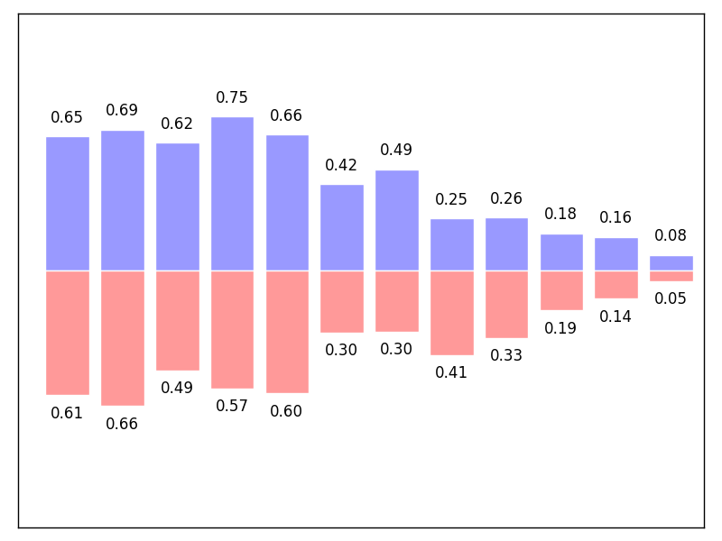提示
注意对其文字。
参考如下代码，尝试画出右侧的图像。
n = 12
X = np.arange(n)
Y1 = (1 - X / float(n)) * np.random.uniform(0.5, 1.0, n)
Y2 = (1 - X / float(n)) * np.random.uniform(0.5, 1.0, n)
plt.bar(X, +Y1, facecolor='#9999ff', edgecolor='white')
plt.bar(X, -Y2, facecolor='#ff9999', edgecolor='white')
for x, y in zip(X, Y1):
plt.text(x + 0.4, y + 0.05, '%.2f' % y, ha='center', va='bottom')
plt.ylim(-1.25, +1.25)
点击图片获取源码
1.4.4.4. 等高线¶
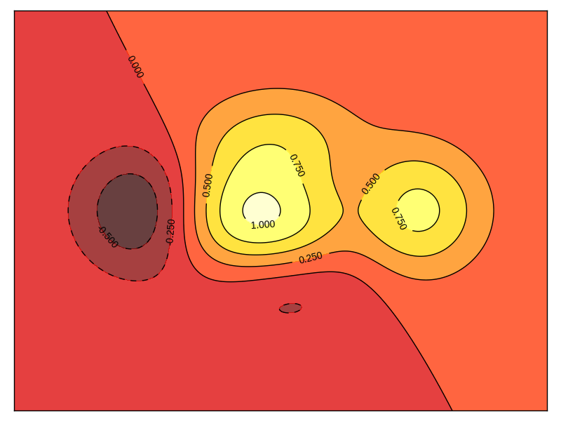提示
需使用 clabel 命令.
参考如下代码，尝试画出右侧的图像，你需要注意 colormap (see Colormaps below).
def f(x, y):
return (1 - x / 2 + x ** 5 + y ** 3) * np.exp(-x ** 2 -y ** 2)
n = 256
x = np.linspace(-3, 3, n)
y = np.linspace(-3, 3, n)
X, Y = np.meshgrid(x, y)
plt.contourf(X, Y, f(X, Y), 8, alpha=.75, cmap='jet')
C = plt.contour(X, Y, f(X, Y), 8, colors='black', linewidth=.5)
点击图片获取源码
1.4.4.5. Imshow¶
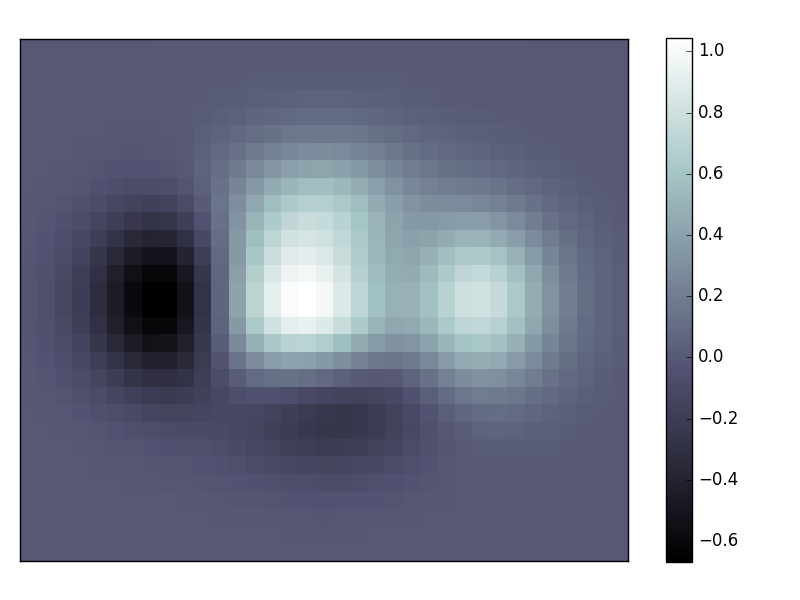提示
你需要注意图像的 origin ，并添加 colorbar
参考如下代码，尝试画出右侧的图像。
def f(x, y):
return (1 - x / 2 + x ** 5 + y ** 3) * np.exp(-x ** 2 - y ** 2)
n = 10
x = np.linspace(-3, 3, 4 * n)
y = np.linspace(-3, 3, 3 * n)
X, Y = np.meshgrid(x, y)
plt.imshow(f(X, Y))
点击图片获取源码
1.4.4.6. 饼图¶
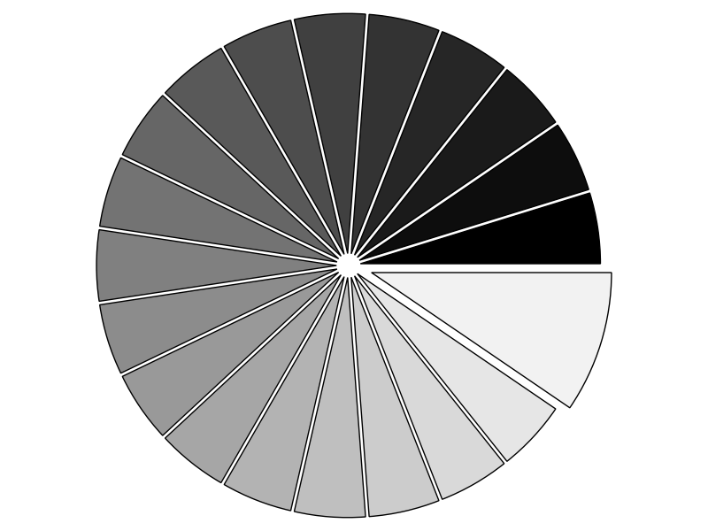提示
你需要更改 Z.
参考如下代码，尝试画出右侧的图像，注意切片大小和色彩。
Z = np.random.uniform(0, 1, 20)
plt.pie(Z)
点击图片获取源码
1.4.4.7. 箭头图¶
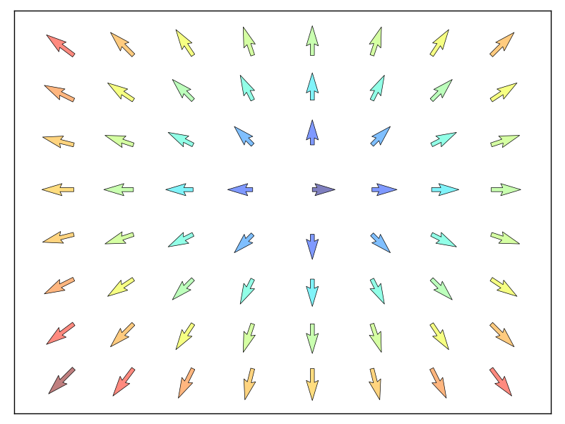提示
需要画两次箭头。
参考如下代码，尝试画出右侧的图像，注意箭头指向和色彩。
n = 8
X, Y = np.mgrid[0:n, 0:n]
plt.quiver(X, Y)
点击图片获取源码
1.4.4.8. 坐标网格¶
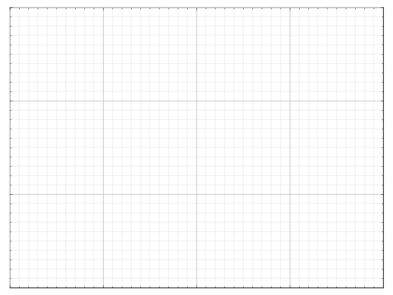参考如下代码，尝试画出右侧的图像,注意线形。
axes = plt.gca()
axes.set_xlim(0, 4)
axes.set_ylim(0, 3)
axes.set_xticklabels([])
axes.set_yticklabels([])
点击图片获取源码
1.4.4.9. Multi Plots¶
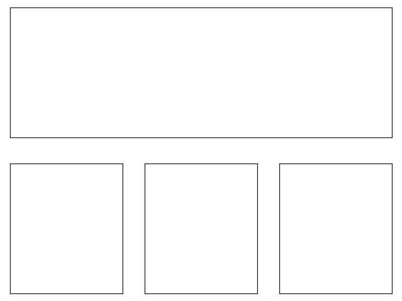提示
可以使用多个subplots来
参考如下代码，尝试画出右侧的图像。
plt.subplot(2, 2, 1)
plt.subplot(2, 2, 3)
plt.subplot(2, 2, 4)
点击图片获取源码
1.4.4.10. Polar Axis¶
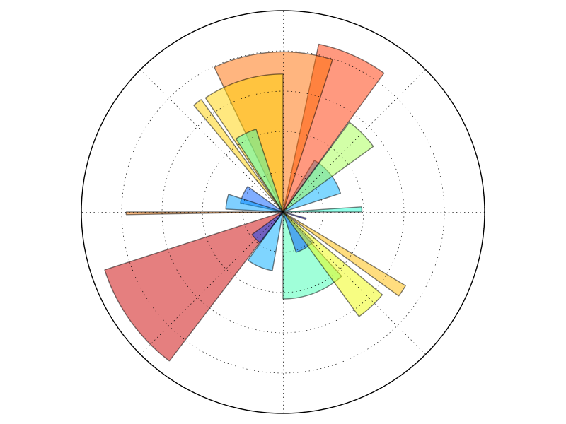提示
只需更改 axes
参考如下代码，尝试画出右侧的图像。
plt.axes([0, 0, 1, 1])
N = 20
theta = np.arange(0., 2 * np.pi, 2 * np.pi / N)
radii = 10 * np.random.rand(N)
width = np.pi / 4 * np.random.rand(N)
bars = plt.bar(theta, radii, width=width, bottom=0.0)
for r, bar in zip(radii, bars):
bar.set_facecolor(cm.jet(r / 10.))
bar.set_alpha(0.5)
点击图片获取源码
1.4.4.11. 3D Plots¶
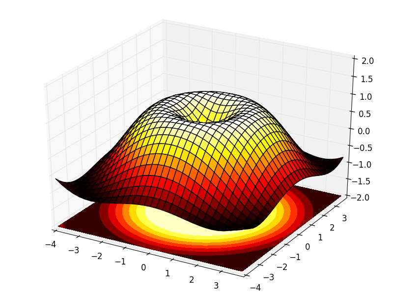提示
你需要使用 contourf
参考如下代码，尝试画出右侧的图像。
from mpl_toolkits.mplot3d import Axes3D
fig = plt.figure()
ax = Axes3D(fig)
X = np.arange(-4, 4, 0.25)
Y = np.arange(-4, 4, 0.25)
X, Y = np.meshgrid(X, Y)
R = np.sqrt(X**2 + Y**2)
Z = np.sin(R)
ax.plot_surface(X, Y, Z, rstride=1, cstride=1, cmap='hot')
点击图片获取源码。
1.4.4.12. Text¶
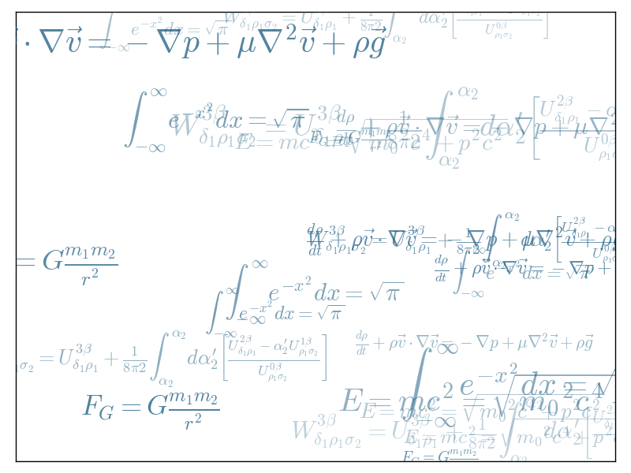提示
想知道 matplotlib logo 是怎么制作的？
点击图片获取源码。
Quick read
对于想要快速浏览Scipy lectures 的读者，你可以直接跳到下一节: Scipy : 高性能科学计算.
这一节余下的部分不是必须学习的内容。但是我们仍然希望你能阅读下面的内容，它们会对你有所帮助。
1.4.5. Beyond this tutorial¶
Matplotlib 拥有众多的帮助文档，下面给出了一些可能对大家有所帮助的文档链接:
1.4.5.1. Tutorials¶
|
|
1.4.5.2. Matplotlib documentation¶
- 用户手册
- FAQ
- Installation
- Usage
- How-To
- Troubleshooting
- Environment Variables
- Screenshots
1.4.5.3. Code documentation¶
在python会话中，你可以很方便地查看源码文档:
>>> import matplotlib.pyplot as plt
>>> help(plt.plot)
Help on function plot in module matplotlib.pyplot:
plot(*args, **kwargs)
Plot lines and/or markers to the
:class:`~matplotlib.axes.Axes`. *args* is a variable length
argument, allowing for multiple *x*, *y* pairs with an
optional format string. For example, each of the following is
legal::
plot(x, y) # plot x and y using default line style and color
plot(x, y, 'bo') # plot x and y using blue circle markers
plot(y) # plot y using x as index array 0..N-1
plot(y, 'r+') # ditto, but with red plusses
If *x* and/or *y* is 2-dimensional, then the corresponding columns
will be plotted.
...
1.4.5.4. Galleries¶
当你想知道一些图表是怎么绘制的时候，查询 matplotlib gallery 是一个不错的选择。
1.4.5.5. Mailing lists¶
通过用户邮件列表 user mailing list 和开发者邮件列表 developers mailing list 获取帮助。
1.4.6. Quick references¶
这里给出一些常用的参考信息
1.4.6.1. Line properties¶
| 属性 | 描述 | 示例 |
|---|---|---|
| alpha (or a) | 透明度，值 0-1 | |
| antialiased | 抗锯齿，值为 True 或者 False | |
| color (or c) | 颜色 | |
| linestyle (or ls) | 见 Line properties | |
| linewidth (or lw) | 线宽，值为浮点数 | |
| solid_capstyle | 实线端点样式 | |
| solid_joinstyle | 实线连接处样式 | |
| dash_capstyle | 虚线端点样式 | |
| dash_joinstyle | 虚线连接处样式 | |
| 记号 | 见 Markers | |
| markeredgewidth (mew) | 记号边缘线宽 | |
| markeredgecolor (mec) | 记号边缘线条颜色 | |
| markerfacecolor (mfc) | 记号中心颜色 | |
| markersize (ms) | 记号大小 |
1.4.6.2. Line styles¶
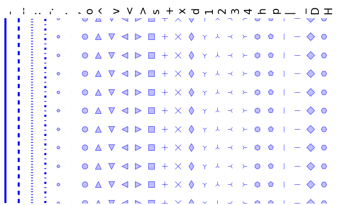{kind=link}
1.4.6.4. Colormaps¶
colormaps中所有的颜色都可以通过添加 _r 后缀获取与其对立的颜色.
例如， gray_r 代表与 gray 相反的颜色。
更多关于colormaps的信息，参见 Documenting the matplotlib colormaps.
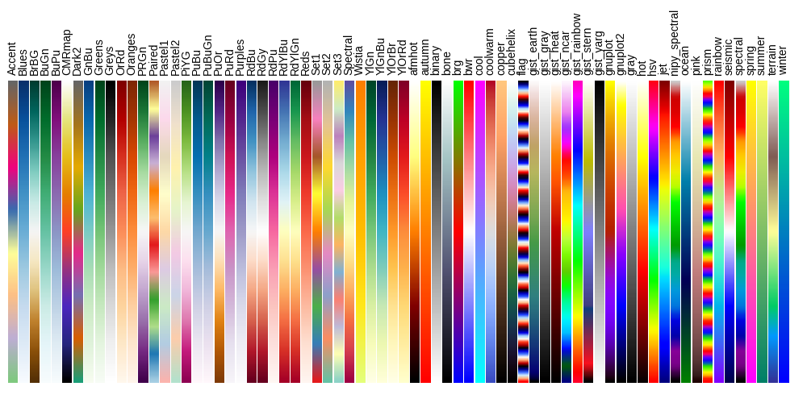{kind=link}